“A tatuagem antiga da cliente era mais parecida com um repolho.”
- Cobertura
- Reforma
- Cicatriz
- Freehand
Allan Mine
Tatuador
Curitiba · PR
Especialista em cobertura
Cobertura não precisa parecer cobertura.
A tatuagem que você esconde vira outra história, desenhada à mão livre direto no seu corpo.
- Cobertura
e reforma - Cicatriz
vira desenho - 100%
à mão livre
Curitiba · PR
+10 anos
tatuando
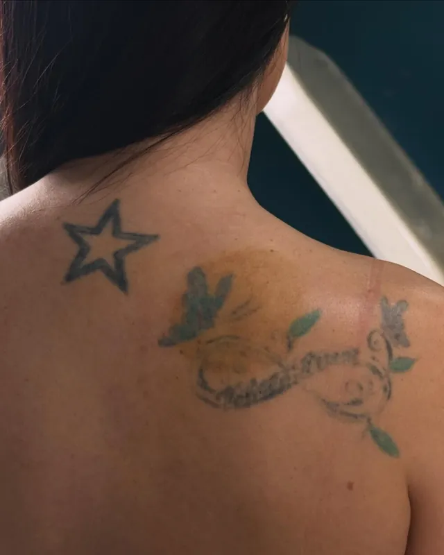
O que já passou pela minha agulha
- O nome do ex.
- A borboleta dos 15 anos.
- A fada da adolescência.
- A rosa que parecia um repolho.
- A estrela no ombro.
- Hoje, ninguém nem desconfia.
Antes e depois
Você ia perceber?
Sete coberturas. Toque na foto pequena para trocar e ver o antes em destaque.
“Tem o nome do ex tatuado e precisa ficar escondendo? Eu te ajudo.”
“Você também tem aquela borboleta tatuada há mais de 10 anos?”
“Às vezes a sua tatuagem só precisa ser reformada.”
“Essa tatuagem é uma cobertura e você nem percebeu.”
“Você também tem uma fada feita na adolescência?”
“A sua cobertura pode ficar delicada.”
Cicatriz também vira desenho.
Cicatriz de cirurgia ou de acidente: dá para transformar em arte com o mesmo cuidado de uma cobertura. Me mande uma foto e conte há quanto tempo ela está fechada para eu avaliar.
Avaliar minha cicatrizProcesso
Nada de decalque.O desenho nasceem você.
- 01
Você me mostra
Manda uma foto da tatuagem antiga com boa luz e conta o que gostaria no lugar. Pode ser só um estilo ou uma flor que você ama.
- 02
Cobertura ou reforma
Eu avalio e digo o caminho. Às vezes ela só precisa ser reformada; às vezes vale cobrir com uma peça nova.
- 03
Eu risco à mão livre
Desenho com caneta direto na pele, por cima da antiga, acompanhando a anatomia do seu corpo. Você aprova antes da agulha.
- 04
A cobertura nasce
Coberturas grandes podem levar mais de uma sessão. Você sai com os cuidados explicados.
Trabalhos
Floral, fine line, realismo e pontilhismo 100% freehand.
Além das coberturas, peças autorais desenhadas direto na pele. Toque numa foto para ampliar.

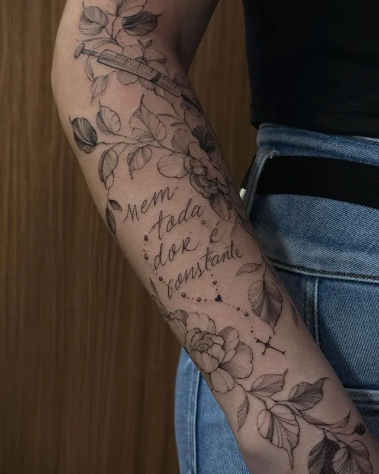
Fechamento floral com escrita no braço
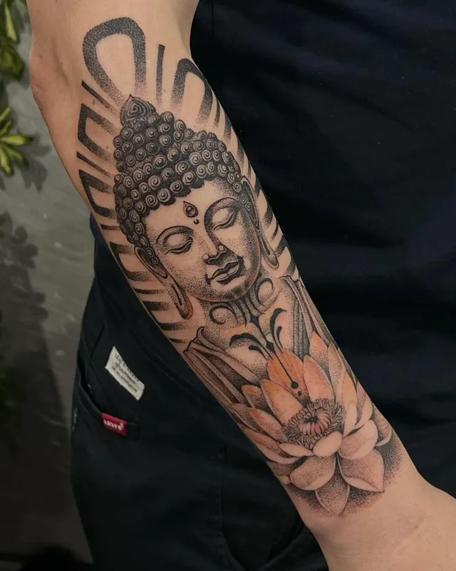
Buda com lótus no antebraço
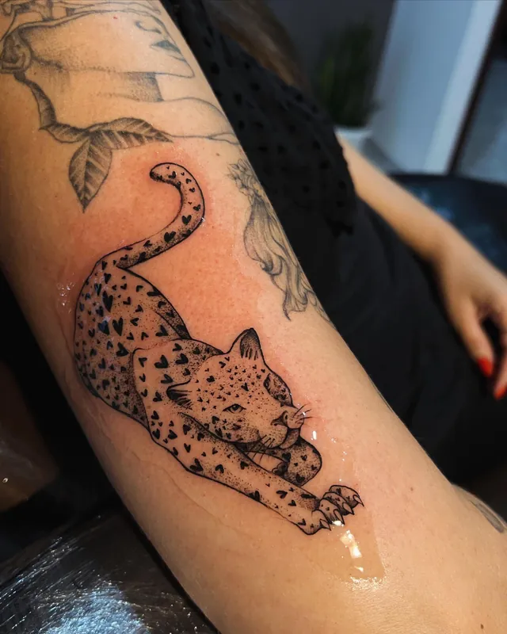
Onça em fine line no braço
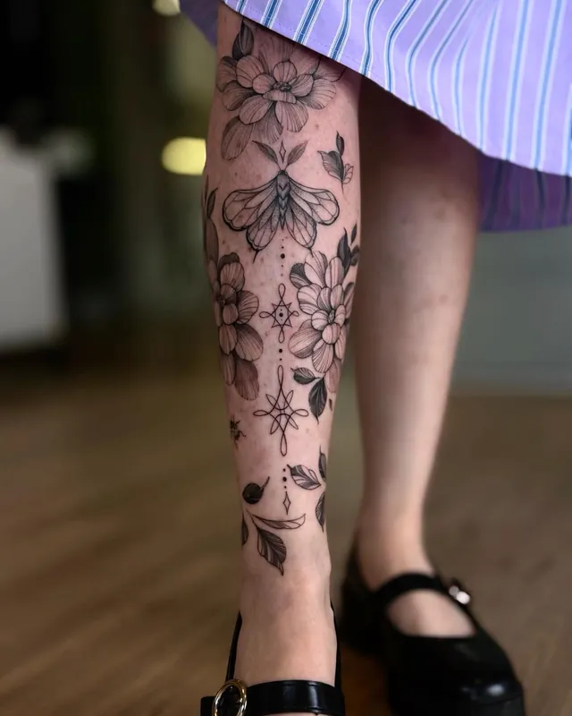
Floral delicado ao longo da perna
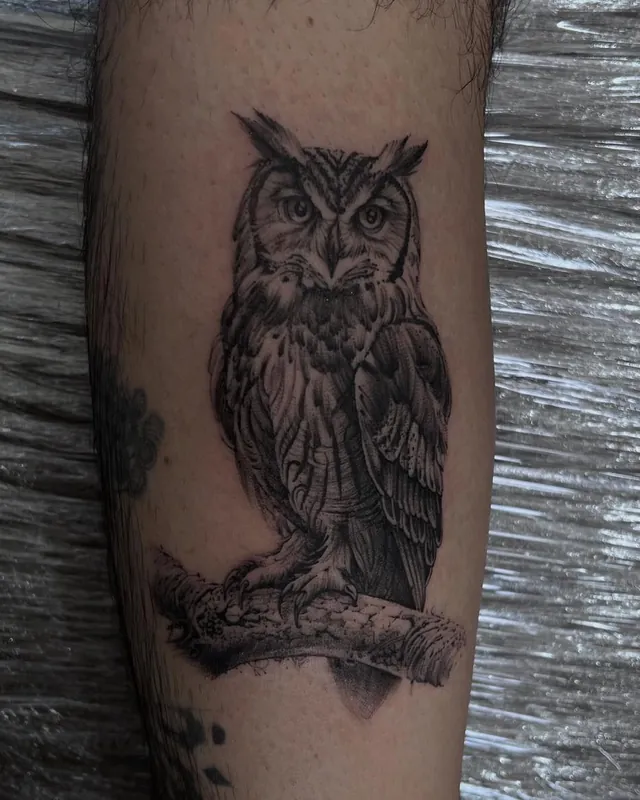
Coruja realista no antebraço
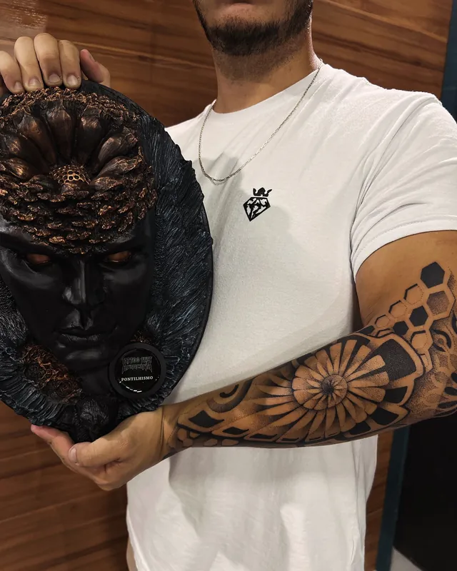
Fechamento em pontilhismo freehand que ganhou troféu
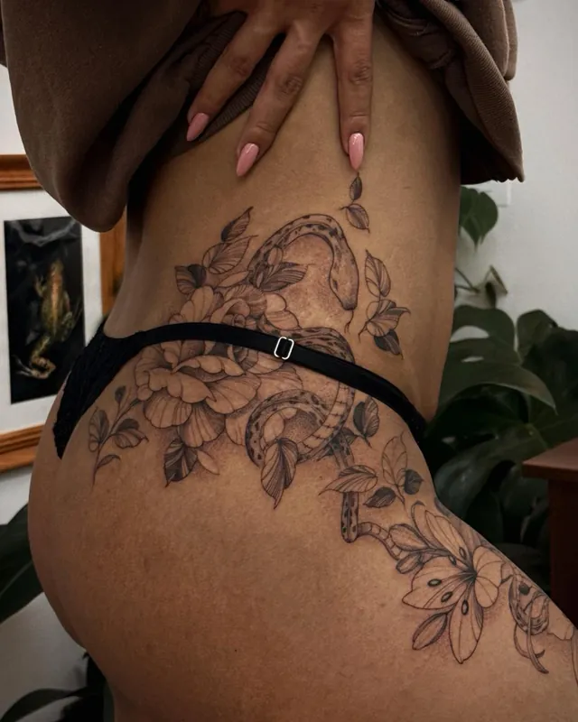
Floral contornando a costela e o quadril
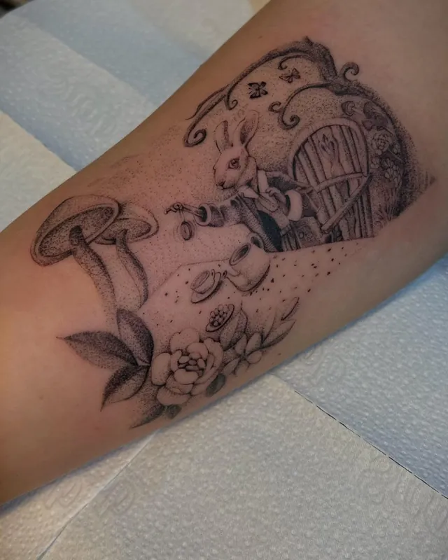
Cogumelos e casinha de fada
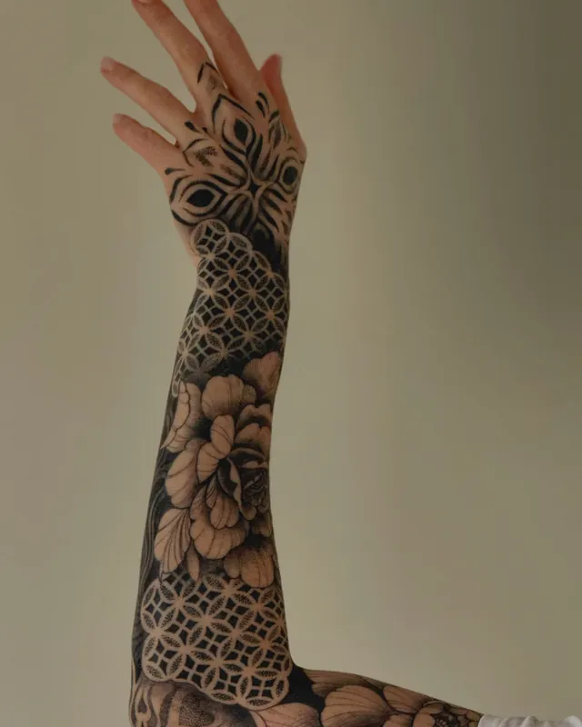
Mandala e floral do braço até a mão
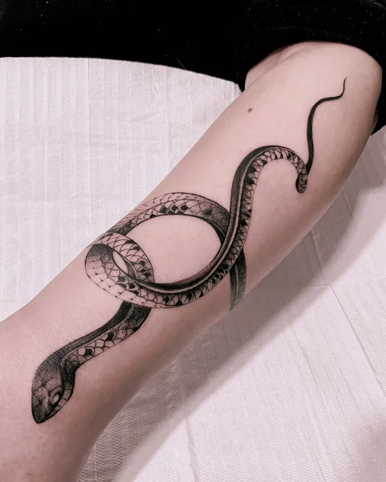
Cobra em fine line no braço
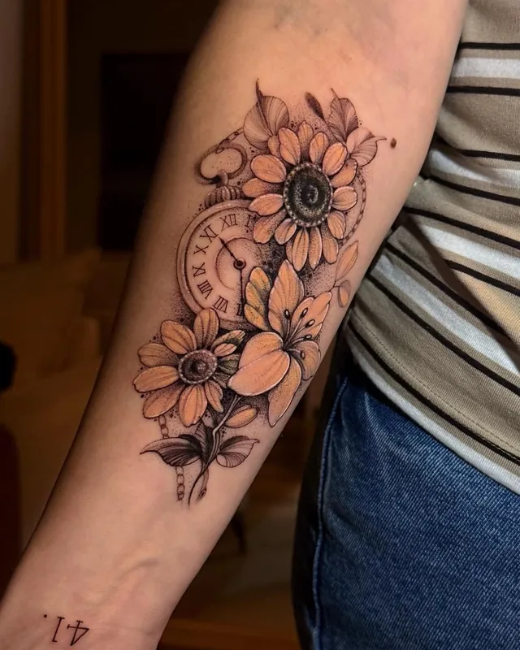
Girassol com relógio no antebraço
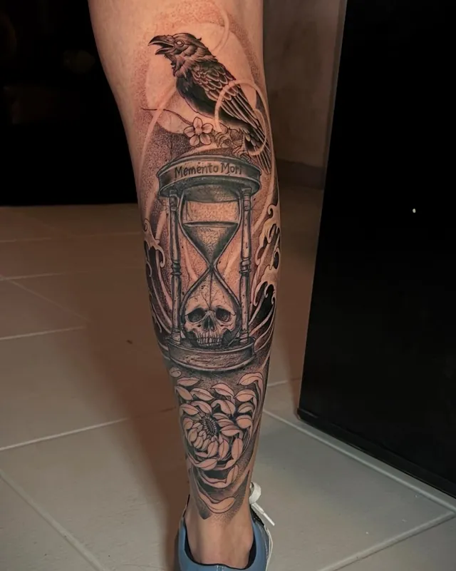
Ampulheta com caveira na perna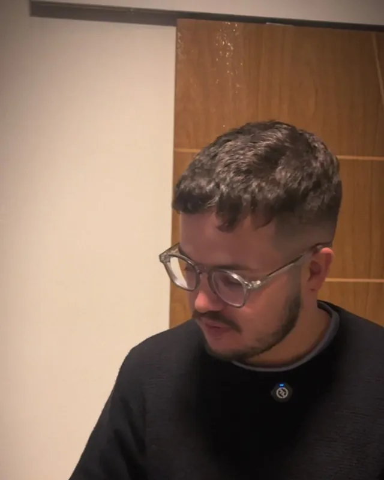
Quem tatua
Allan Mine
“Qualidade e um bom atendimento são o meu diferencial. Faço da sua ideia uma arte autoral.”
Tatuo há mais de 10 anos e a maior parte das minhas artes nasce na hora, desenhada à mão livre direto na pele. Me especializei em cobertura porque sei o peso de esconder uma tatuagem que dá vergonha.
- 10+
- anos tatuando
- 100%
- freehand
- 22 mil
- pessoas acompanham no Instagram
Orçamento
Me mostra a tatuagem que você quer esquecer.
Preencha o que souber. A mensagem abre no WhatsApp já escrita e você só manda a foto na conversa.
- Onde
- Curitiba, PR
- (41) 9987-3760
- @allan.mine